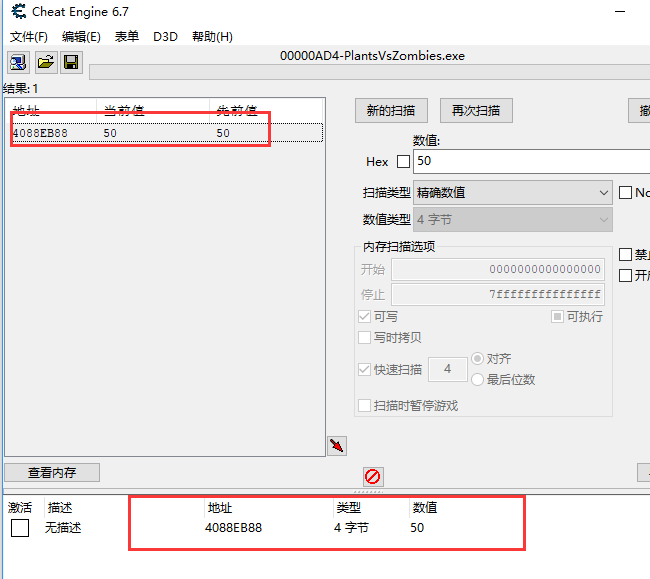

第一章 阳光数量基址篇
本篇文章我们换个游戏，植物大战僵尸这个游戏还是有点复杂的，想全面分析了解透彻是需要下点功夫，我们这里就以全面分析植物大战僵尸为目标了。当然凡事从基础开始，我们首先来寻找一下植物大战僵尸阳光数量的基址。和上一篇文章有点不同，这个游戏增加了一些难度，怎么找阳光数量的地址我们上一篇文章其实已经讲解过方法。
支持就是最大的动力，希望各位小伙伴们能联系我邮箱，加油！
1、CE （游戏内存修改器）
Cheat Engine，简称CE，是由Eric Heijnen(网名“Dark Byte”)开发的一款开源软件，主要功能包括存储器扫描，十六进制编辑，指令反汇编，内存数据修改等功能，是一款强大的游戏修改器。Cheat Engine是最常见的游戏外挂工具，通过Cheat Engine，用户可以快速查找和修改游戏数据及更改游戏处理逻辑。
下载地址：
链接：https://pan.baidu.com/s/1pLebzsB 密码：c4el
2、植物大战僵尸（游戏）
下载地址：
链接：https://pan.baidu.com/s/1dFPduy1 密码：xgz2
Tip：本游戏有捆绑软件，安装时请去除安装捆版软件的勾选，启动游戏时有设定主页的选择，请无视它点击否。
我们可以想象一棵苹果树，树有根，树上也有苹果， 某个苹果对应某个偏移，而树根就是基址，通过基址往上找就能找到某个苹果。而找到的这个苹果，相对于有个偏移。通过基址+偏移就能确定是哪个苹果。
因为游戏退出基址不会变化，只有游戏更新后才会变化，而要是用找到的内存地址，例如：血的内存地址，游戏退出是会变化的，不方便我们编写辅助调用。
在计算机科学中，指针（Pointer）是编程语言中的一个对象，利用地址，它的值直接指向（points to）存在电脑存储器中另一个地方的值。由于通过地址能找到所需的变量单元，可以说，地址指向该变量单元。因此，将地址形象化的称为“指针”。意思是通过它能找到以它为地址的内存单元。
当指针变量pp所指的变量Ip也是一种指针时，pp是一种指向指针的指针，称指针变量pp是一种多级指针。
在如上图的A指向B、B指向C的指向关系中：
首先C是"一段数据",比如你用malloc或者new分配了一块内存，然后塞进去"一段内容",那就是C了。C的起始地址是0x00000008。 B是一个指针变量,其中存放着C的地址，但是B也要占空间的啊，所以B也有地址，B的起始地址是0x00000004,但是B内存中存放的是C的地址，所以B里面的内容就是0x00000008。
B= 0x00000008; //B的内容
*B = "一段内容"; //B解引用，也就是B指针指向的C的值
&B = 0x00000004; //B取地址，B的地址是0x00000004
再来看A：A是二级指针变量，其中存放着B的地址0x00000004,A也有地址，是0x00000000;
*A = B= 0x00000008; //A解引用也就是B的内容
**A = *B = "一段内容"; //B解引用，也就是B指针指向的C的值
A = &B = 0x00000004; //A存的是B的地址，B的地址是0x00000004
&A = 0x00000000; //A取地址
这样多级指针的概念大家就清晰了，接下来就看实例吧。
上一篇文章我们介绍了如何去寻找水果忍者游戏时间基址，由于这个时间基址是个一级指针，所以我们很快就找到了，不过多级指针那该如何去寻找呢，植物大战僵尸阳光数量基址正好是个多级指针，我们一起来学习一下吧。
再找植物大战僵尸阳光数量基址之前我们肯定先要找到它的地址了，然后从地址入手去找基地址，怎么找它的地址？很简单，我们打开游戏和Cheat Engine。
首先我们使用CE加载一下植物大战僵尸的进程：
看一下阳光数量现在的值

回到CE，我们使用精准数值的扫描方式，输入150进行首次扫描
找到了214个结果，不用担心，我们回到游戏种个植物。
可以发现阳光数量现在的值是50，我们继续回到CE输入50点击再次扫描，可以发现我们成功找到植物大战僵尸阳光数量地址，我们双击它，它就会被添加到下面的地址栏中。
我们在下面地址栏中选中它然后右击->找出是什么访问了这个地址
选择点击详细信息，可以看见CE已经帮我们计算出可能的指针地址：40889610，记住还有偏移量5578
点击确定后然后点击停止，我们回到CE勾选Hex，输入40889610后点击首次扫描
可以发现一下子找到30个结果，而且仔细翻找查看并没有绿色地址，到这里相信大家都慌了，下一步不知道从哪个地址下手好。大家如果继续从前两个地址下手，肯定会回到原处，地址距离不大，所以它可能数个数组之类的。这里建议大家从一个不同于其他地址的地址下手，就是它的位置和其他地址相差很大。这里我们从第三个地址下手，双击地址0465B4E0然后右击->找出是什么访问了这个地址。
选择点击详细信息，可以看见CE已经帮我们计算出可能的指针地址：0465AC78，记住还有偏移量868
点击确定后然后点击停止，我们回到CE勾选Hex，输入0465AC78后点击首次扫描

可以发现我们一下找到了1663个结果，但是往下翻我们可以发现绿色地址，也就是我们的基地址，我们看下模块地址是多少。PlantsVsZombies.exe+3794F8
接下来我们手动添加地址。直接用模块地址就行啦。还有别忘记有两个偏移量
添加偏移

点击确定，这里我们的基址就找到了。
当我们分析完游戏逻辑，收集了足够的游戏数据之后就可以动手开发一款专属于自己的辅助工具。而开发辅助的第一步就是先找到游戏进程，锁定游戏进程之后接下来才能在考虑辅助功能的实现是选择改数据、改代码还是CALL函数。
操作系统提供了一个api GetWindowThreadProcessId，使用该api可以获得窗口所在线程与所在进程信息，所以如果目标进程有窗口那么就可以使用窗口的方式来查找目标进程。获得窗口句柄的方式一般用FindWindow函数。
HWND FindWindow(
LPCTSTR lpClassName,
LPCTSTR lpWindowName
);
lpClassName参数指向类名，lpWindowName指向窗口名，如果有指定的类名和窗口的名字则表示成功返回一个窗口的句柄。否则返回NULL。
#include "stdafx.h"
#include <stdlib.h>
#include "afxwin.h"
using namespace std;
int _tmain(int argc, _TCHAR* argv[])
{
DWORD dwPID=0;
LPCWSTR cs = L"Plants vs. Zombies 1.2.0.1073 RELEASE";
HWND Pwnd;
Pwnd = FindWindow(NULL,cs);
if (Pwnd != NULL){
printf("yes\n");
}
else{
printf("no\n");
}
system("pause");
}
运行结果：
GetWindowThreadProcessId是一种计算机函数，功能是找出某个窗口的创建者（线程或进程），返回创建者的标志符，函数原型是DWORD GetWindowThreadProcessId。
DWORD GetWindowThreadProcessId(
HWND hWnd,
LPDWORD lpdwProcessId
);
hWnd（向函数提供的）：被查找窗口的句柄，lpdwProcessId：进程号的存放地址（变量地址）。
返回线程号，注意，lpdwProcessId 是存放进程号的变量。返回值是线程号，lpdwProcessId 是进程号存放处。
#include "stdafx.h"
#include <stdlib.h>
#include "afxwin.h"
using namespace std;
int _tmain(int argc, _TCHAR* argv[])
{
DWORD dwPID=0,dwPIT;
LPCWSTR cs = L"Plants vs. Zombies 1.2.0.1073 RELEASE";
HWND Pwnd;
Pwnd = FindWindow(NULL,cs);
if (Pwnd != NULL){
printf("yes\n");
dwPIT = GetWindowThreadProcessId(Pwnd, &dwPID);
printf("%d\n", dwPID);
}
else{
printf("no\n");
}
system("pause");
}
运行结果：
这样我们就锁定目标进程了。
路漫漫其修远兮，吾将上下而求索。支持就是最大的动力，加油！